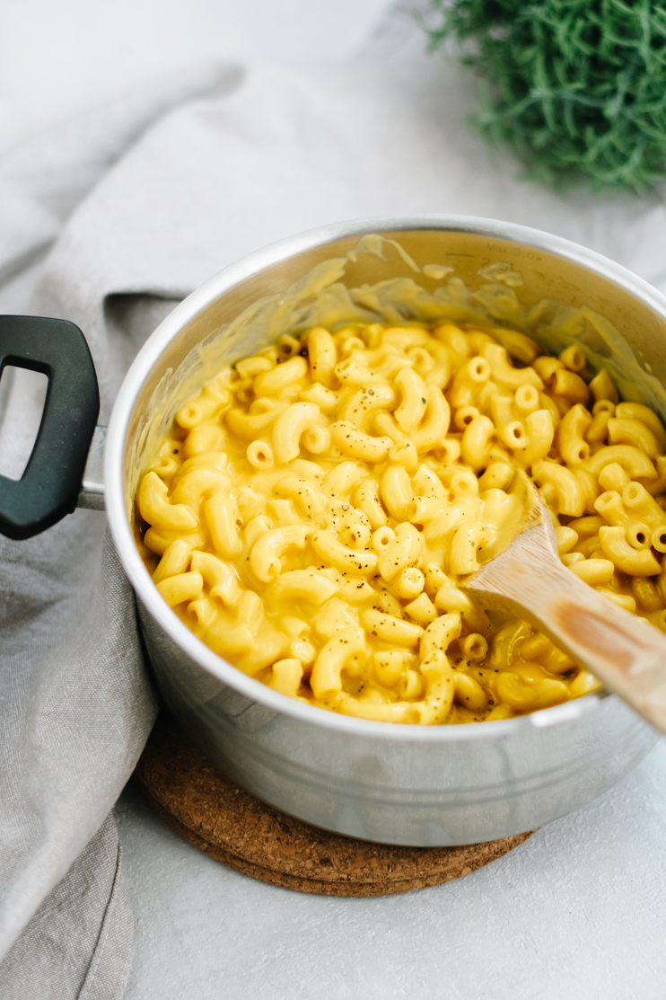

Mac and Cheese

| Ingredient |
Amount |
| Macaroni |
400 g |
| Water |
4 l |
| Butter |
4 sl |
| Flower |
1 dl |
| Milk |
5 dl |
| Cheese |
200 g |
| Salt and Black pepper |
pinch |
- Step 1
Boil macaroni in salted water until al dente, drain.
- Step 2
Meanwhile, melt the butter in a pot. Whisk in the flour and heat while stirring for 1 minute. Add milk, whisk carefully. Bring the sauce to a boil and cook for 1 minute.
- Step 3
Take the pot off the heat, stir in the pepper. Add grated cheese, stir until melted. Season with salt if necessary.
- Step 4
Mix the sauce and pasta together and serve immediately.